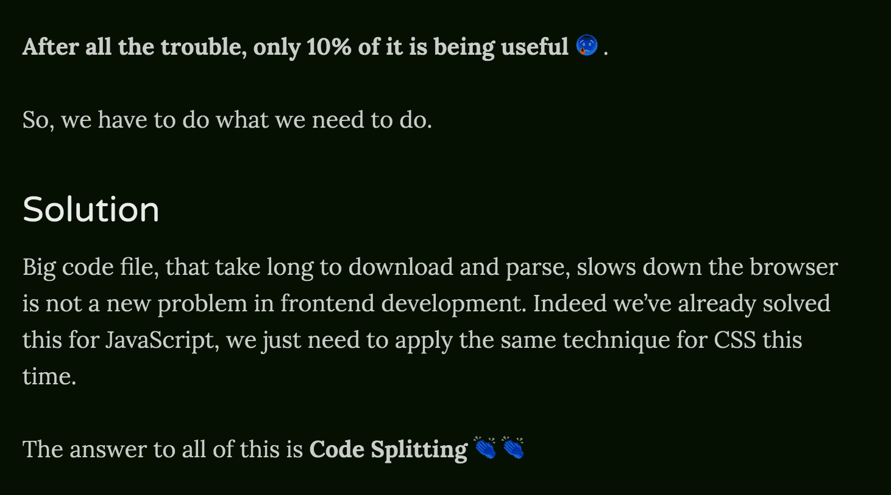

After reading Dan's Overreacted & Wei's A Work in Progress a while ago, I decided to have my own blog as well! (In case you still don't know, it's the very one you are reading right now!)
I took it as an opportunity to learn Gatsby, I've heard about it for a while, so I guess it's to know how it works.
This article is NOT about how to build a Gatsby site, there a lot resources about that you can go for. But I am here to share some of my customisations that I've added to my Gatsby site, and hopefully you would share yours too.
The boilerplate
I used the exact same Gatsby starter pack as Dan's Overreacted, because why not ¯_(ツ)_/¯. It looks sleek and simple and I like it.
The deployment
I use Github Pages to host this blog.

According to the settings, I am required to use master branch to serve the content, that's why I am writing and developing in dev branch instead.
To deploy, I added a publish.js script. The script will clone the repo in a temporary folder, copy all the built files into the folder, make a commit and push it to the master branch.
Lastly, I added the script to the pre-push git hook, so that every time when I am pushing changes to the dev branch, it will also build and "deploy" changes to the master branch.
The light & dark mode
Wei did a sharing on how mix blend mode works and how she added night mode using mix-blend-mode on her site.
So I decided to add my own Dark Mode Switch as well.
The Dark Mode Switch was relatively easy. I added a pseudo-element div#___gatsby::after to cover over my entire Gatsby blog, so I don't have to create another div element.
// filename: theme-mode.css
div#___gatsby::after {
content: '';
position: fixed;
top: 0;
bottom: 0;
left: 0;
right: 0;
pointer-events: none;
background: white;
mix-blend-mode: difference;
}
It's easy and it looks great, except, all my images and emojis are inverted. 😢

I need to wrap all my emojis around a <span> so I can apply some css like isolation: isolate to exclude them from being blended. Inspiration credits to huijing 👏👏. But I am lazy to wrap all my emojis with <span>, I want to use them anytime I want, without bothering much of the <span>, so I decided to write a gatsby remark plugin to do that for me. 😎
Well, it turns out it's not that hard.
Remark provides a friendly api to tap into the AST and does transformation.
// filename: remark-emoji.js
const visit = require('unist-util-visit');
const emojiRegex = require('emoji-regex');
module.exports = function({ markdownAST }) {
visit(markdownAST, 'text', node => {
node.type = 'html';
node.value = node.value.replace(
emojiRegex(),
val => `<span class="emoji">${val}</span>`
);
});
};
using emoji-regex find emojis and wrap them with a
...and it works!
Although somewhere when I started writing the gatsby plugin, a weird error popped up, and after some digging, I noticed that
I had to include package.json into the plugin folder, or else it will yell at me.
The Restructure
A while ago, I decided to add more categories to my blog, ie, my blogs, my talks and my notes. So I created different folders for them and rewrote the GraphQL query
The Graphql Editor in http://localhost:8000/___graphql is really helpful for me to understand how Gatsby and Gatsby plugins are creating all the objects.